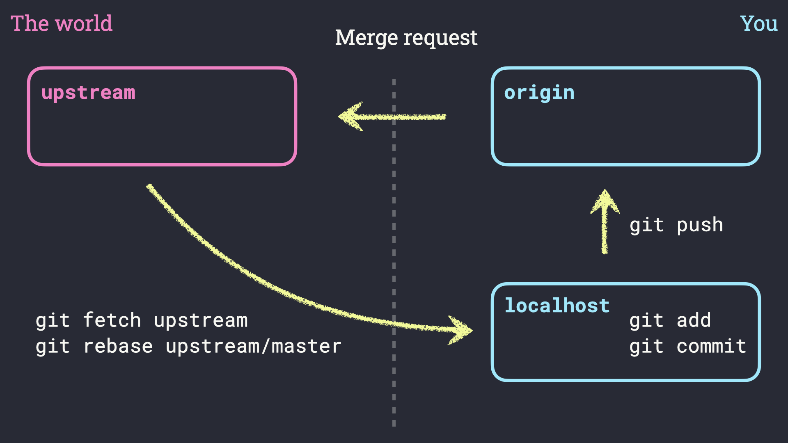

class: center, middle, inverse # Sharing is caring Lukas Kluft [github.com/lkluft](https://www.github.com/lkluft) --- # Collaboration * Platforms like GitHub and Gitlab provide functionality for **collarboration** between different users * The common workflow is build around so called **pull requests** (sometimes called merge requests) * The basic workflow consists of 1. Creating a **fork** which is a copy of the reop server-side 2. Commiting and pushing your changes to your own fork 3. Sending a pull request to the maintainer of the original repo, asking them to incorporate your changes --- # The collaboration workflow .center[] --- class: middle, center, inverse # Learning by doing! --- # Exercises * Fork the NextGEMS repository at [](https://gitlab.dkrz.de/easy/processing) * Clone your fork to your local machine * Add the group repository as remote `upstream` * Create your own working direcotry and add a `README.md` file * Push the changes to your fork * Open a merge request --- # Solutions 1 * Fork the NextGEMS repository at [](https://gitlab.dkrz.de/easy/processing) * Clone your fork to your local machine ```sh git clone https://gitlab.dkrz.de/<YOUR_USERNAME>/processing ``` * Add the group repository as remote `upstream` ```sh cd processing git remote add upstream https://gitlab.dkrz.de/easy/processing ``` --- # Solutions 2 * Create your own working direcotry and add a `README.md` file ```sh mkdir <YOUR_NAME> && cd <YOUR_NAME> echo "This is the working directory of <YOUR_NAME>" >> README.md ``` * Commit and push the changes to your fork ```sh git add README.md git commit -m "Add working directory for <YOUR_NAME>" git push origin master ``` * Open a merge request --- class: center, middle, inverse # Thanks for your attention! You can find this presentation on [github.com/lkluft/git-intro](https://www.github.com/lkluft/git-intro) 😉